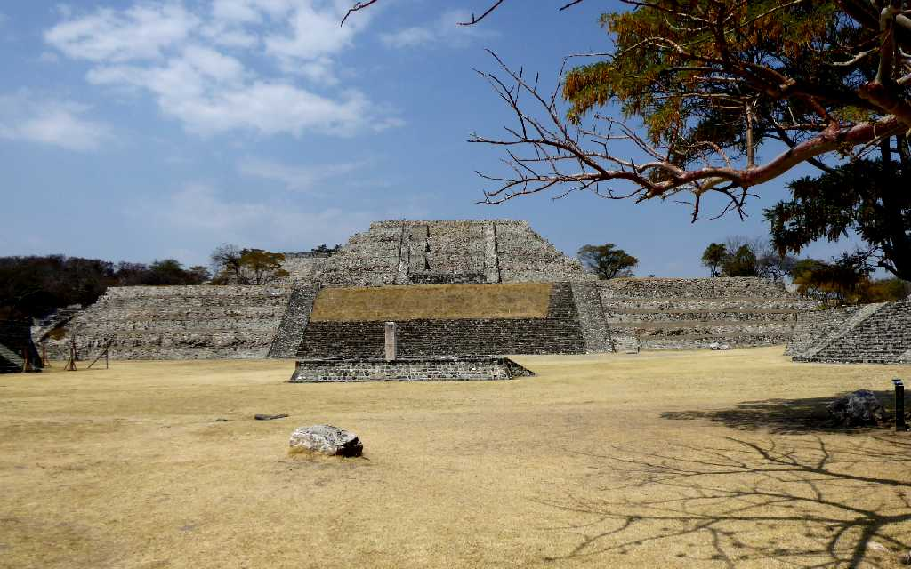
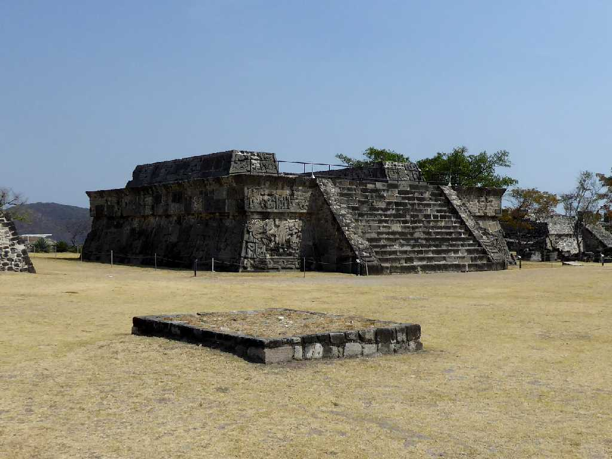
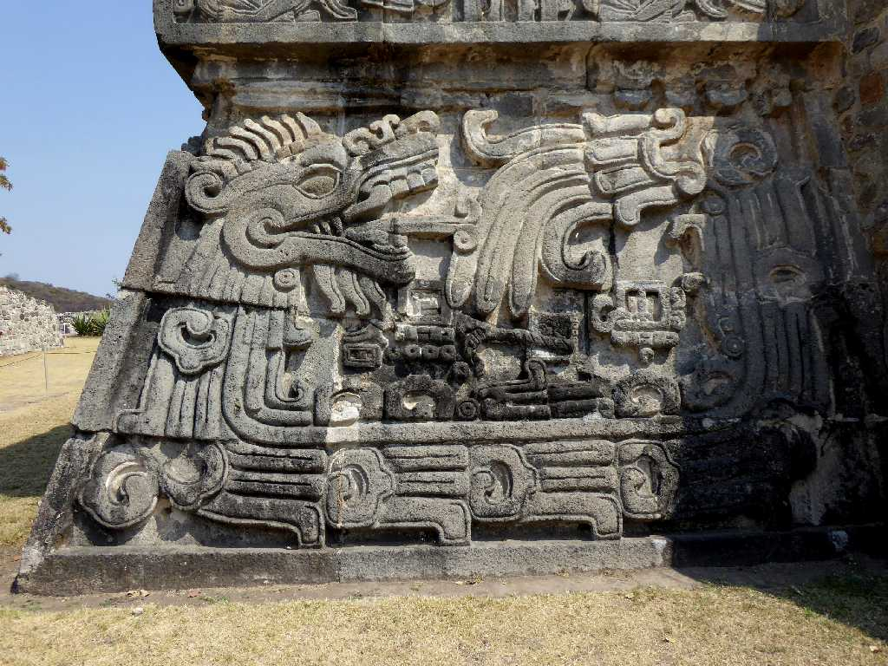
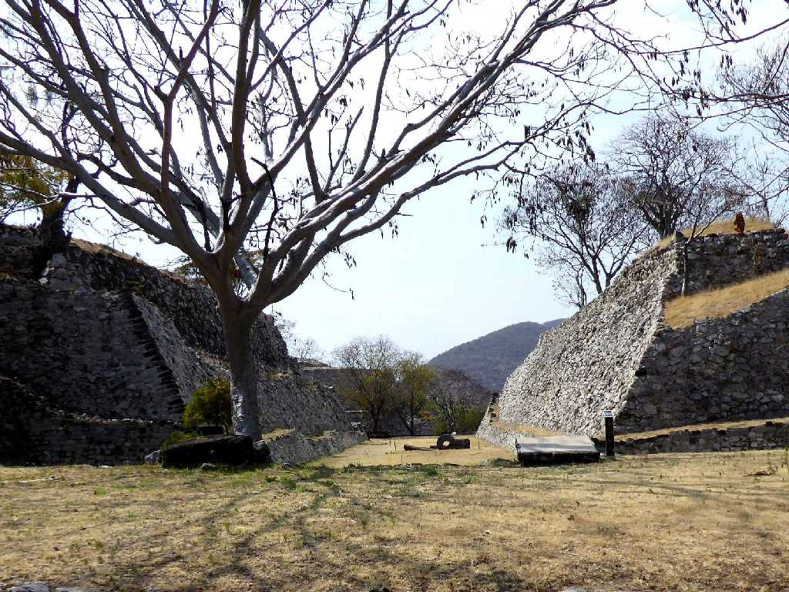
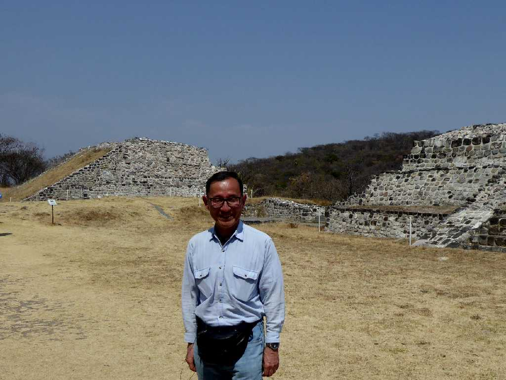

Gran Pirámide Xochicalco (AD650-900)
テオティワカンが衰退した後に栄えたトルテカ文明の中心都市であったと考えられている花(xochi)の家(cal)のある場所(co)を意味するソチカルコ遺跡 石碑の広場に面した大ピラミッド

Templo de la Serpiente emplumada Xochicalco
トルテカ文明の美しいレリーフが残る羽毛の蛇の神殿

Alivio Templo de la Serpiente emplumada
羽毛の蛇の神殿の正面左の美しいレリーフ

Cancha de Juego de Pelota Xochicalco
ゴールの石が残る球戯場

March 12 2020 Xochicalco